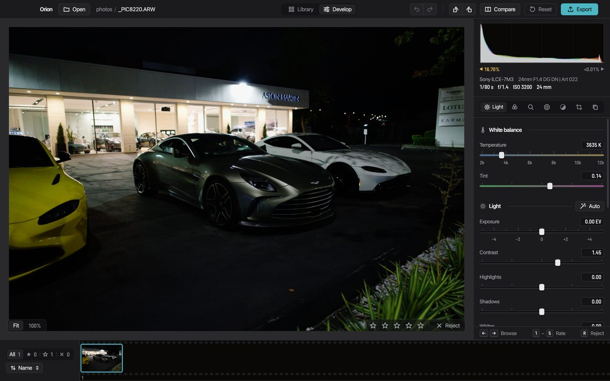

Orion for macOS
The alpha for Macs with Apple silicon. Free to download, with no account to make.
Download for macOS Release notes
Chosen for macOS from what your browser reports. Other systems are listed below.
This looks like an Intel Mac.
Orion is built only for Apple silicon (M1 and later), so it won't open here. There is no Intel build.
Downloading for another Mac? That button is the right file.
Not yet. Orion runs on Macs today. The Windows version is in testing and has no download yet.
Watch Orion on GitHub Download for macOS
On GitHub, choose Watch, then Custom, then Releases, to hear when a Windows build ships.
It runs on Macs with Apple silicon. Open this page on your Mac to download it, or share the link to send it there.
- File
- Size
- Released
- Runs on
- macOS 14 or later, Apple silicon
- SHA-256

Opening it the first time
macOS stops the first launch because this alpha is signed ad hoc and isn't notarized. The app is the same either way; the warning is about who vouched for it.
Drag Orion to Applications
Open the downloaded disk image and drag Orion onto the Applications folder beside it.
Open it from the right-click menu
Right-click Orion in Applications, choose Open, then Open again. You do this once.
No Open button? Use Terminal
This clears the download flag macOS put on the app. It also lets Claude and other agents start Orion's MCP server.
xattr -dr com.apple.quarantine /Applications/Orion.app
Every platform
Orion is Mac only today.
-
macOSThis computer
Apple silicon (M1 or later), macOS 14 Sonoma or later
Alpha, available now
Download -
WindowsThis computer
Requirements not announced
In testing, not released yet
Download -
LinuxThis computer
Requirements not announced
In testing, not released yet
Download -
Intel MacsThis computer
x86-64
Not built
-
iPhone, iPad, AndroidThis computer
Phones and tablets
No app: Orion is a desktop editor
Older versions
Every build, its notes and its files are on GitHub Releases.
Editing with Claude
The MCP server ships inside the app. How agents use it.
Something broke
Write to alpha@bankoti.dev with the photo's camera and what you did.